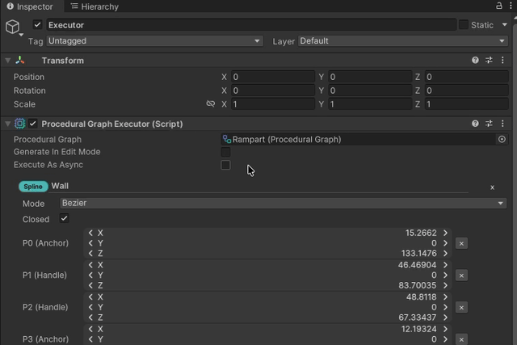

Sync vs Async: What Changes?
OctoShaper exposes both synchronous and asynchronous graph execution. The graph still runs in dependency order either way, but async-capable node methods can be awaited instead of forcing every step to complete immediately on the same call stack. For the actual Unity-facing runtime API, see Runtime Generation?.
Execution Comparison
Sync and async side by side

The graph behavior stays structurally identical, but the runtime path on the right shows how the async toggle changes the caller experience instead of the graph topology.
Synchronous execution
Use sync execution when you want immediate, deterministic completion before the next step in your workflow continues.
- Good for editor-side regeneration and tightly controlled gameplay moments.
- Easy to reason about because the result is ready when the call returns.
- If a graph contains async-capable nodes, the sync path waits for them to finish before continuing.
Asynchronous execution
Use async execution when node implementations naturally perform asynchronous work and you want the caller to await completion instead of blocking immediately.
- The graph still advances in topological order.
- OctoShaper does not automatically parallelize sibling nodes for you.
- Async helps when the work itself is async, not as a general promise of background speedup.
What stays the same
- The graph structure does not change. Nodes still run according to their dependencies.
- Outputs are published after each node completes, whether that completion is immediate or awaited.
- Subgraphs follow the same rules as top-level graphs.
API shape
The graph executor exposes both sync and async entry points. The execution context and configuration are the same either way; the difference is whether the caller blocks immediately or awaits completion. If the graph data model itself feels abstract here, Elements? and Node Graph Basics? cover that layer.
using System.Threading.Tasks;
using CuriousTrove.OctoShaper;
using CuriousTrove.OctoShaper.Core.Data;
using UnityEngine;
public sealed class GraphExecutionExample : MonoBehaviour
{
[SerializeField] private ProceduralGraph graph;
public void RunSync()
{
var context = OctoShaperRuntime.CreateExecutionContext(graph);
var executor = OctoShaperRuntime.CreateExecutor(graph);
executor.Execute(context, ElementSet.CreateImplicitSingle(), new ProceduralConfiguration());
}
public async Task RunAsync()
{
var context = OctoShaperRuntime.CreateExecutionContext(graph);
var executor = OctoShaperRuntime.CreateExecutor(graph);
await executor.ExecuteAsync(
context,
ElementSet.CreateImplicitSingle(),
new ProceduralConfiguration());
}
}Where you see this in Unity
The ProceduralGraphExecutor component exposes an Execute as async option for runtime use. When that toggle is enabled during play mode, regeneration requests are queued through the async execution path instead of forcing an immediate synchronous run. The full component workflow is documented in Runtime Generation?.
For most editor workflows, synchronous execution remains the easier default. Reach for async when the runtime behavior of the graph or its services makes waiting explicitly the better fit.